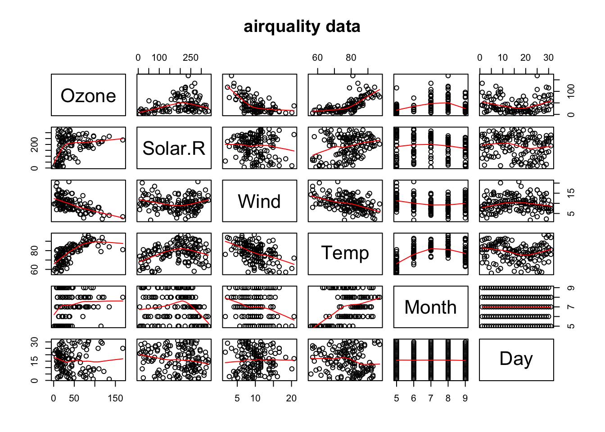

2 Introducción al software estadístico R
R es un entorno y lenguaje de programación orientado al análisis estadístico, al cálculo, manipulación de datos, y representaciones gráficas. Es multiplataforma y parte del sistema GNU y se distribuye con licencia GNU-GPL.
Más información aquí.
2.1 Algunas cuestiones a tener en cuenta sobre R
Rdistingue mayúsculas y minúsculas.Para asignar contenido a un objeto usamos
<-. Por ejemplo,x <- 10asigna axel valor10. También podemos usar=.Para ver el contenido de un objeto simplemente escribimos su nombre.
Para usar los comandos escribimos el nombre del comando seguido de sus argumentos entre paréntesis. Por ejemplo,
ls()da una lista de los objetos en el área de trabajo. Como no usamos argumentos (diferentes a los que el comando tenga por defecto) no escribimos nada en el paréntesis.Para obtener ayuda usamos el comando
help. Por ejemplo,help(mean)para obtener ayuda sobre el comandomeanque calcula la media.
2.2 Rstudio
RStudio es un IDE (Integrated Development Environment, o Entorno de Desarrollo Integrado) de código abierto para R, que permite interactuar con R de manera muy simple.
Entre otras ventajas, Rstudio utiliza diferentes colores para las distintas clases de objetos de R, permite autocompletar código, incluye un sistema de menús de ayuda muy completo, cuenta con un potente sistema para la gestión, descarga y construcción de librerías, dispone de un depurador de código que detecta posibles errores de sintaxis, es multiplataforma (existen versiones para Windows, Linux y Mac).

Figure 2.1: Interfaz RStudio
A la izquierda, la consola donde se ejecutan los comandos de R.
A la derecha, en la parte superior, tenemos una ventana que muestra nuestro entorno (environment) de trabajo, en el que iremos viendo las variables y funciones que vayamos cargando, creando, etc. Obsérvese que esta ventana tiene algunos iconos que permiten guardar el contenido de la memoria, cargar el contenido de la memoria de una sesión de trabajo anterior, importar archivos de datos que se hayan guardado como texto, y limpiar el contenido de la memoria.
A la derecha, en la parte inferior, se muestra el contenido de nuestro directorio home donde R arranca por defecto. Observemos que esta ventana tiene varias pestañas:
- Files: archivos en el directorio actual.
- Plots: en esta ventana se irán mostrando los gráficos que generemos con el programa.
- Packages: permite ver qué librerías (colecciones de funciones que extienen la funcionalidad de
R) tenemos instaladas; asimismo nos permite descargar e instalar nuevas librerías. - Help: permite acceder a ayuda sobre `R.
- Viewer: Permite acceder a contenido web local.
2.3 Instalar un paquete de R
- Desde la consola
install.packages("< Nombre del paquete >")- Ejemplo:
install.packages("DAAG")
# Varios paquetes con el comando c("< Paquete 1 >","< Paquete 2 >")
install.packages(c("DAAG","psych","gdata","foreign","Hmisc","xlsx",
"MASS","calibrate","corrplot","fields","RColorBrewer",
"ggplot2","lattice","visreg",
"car","InformationValue","ROCR")) - Desde Rstudio:
Packages > Install
2.4 Empezando con R
- Obtener el directorio de trabajo o working directory
getwd() - listar los objetos en el espacio de trabajo o workspace
ls()- Definir el working directory
setwd("/Users/dlee") Desde Rstudio:
Files > Click en ... > More > Set as workind directoryVer los últimos comandos utilizados en la consola
history() # mostrar los últimos 25 comandos
history(max.show=Inf) # mostrar todos los comandos anteriores- Guardar el historial de comandos
savehistory(file="myfile") # el valor por defecto es ".Rhistory"- Cargar los commandos guardados en una sesión anterior
loadhistory(file="myfile") # el valor por defecto es ".Rhistory"- Salvar todo el workspace en un fichero
.RData
save.image()- Guardar objectos especificos a un fichero (si no se especifica la ruta en el ordenador, se guardará en el directorio actual de trabajo).
save(<object list>,file="myfile.RData") - Cargar un workspace en la sesión
load("myfile.RData") - Salir de
R. Por defectoRpregunta si deseas guardar la sesión.
q()2.5 Cargar librerías en R
- Una vez instalada la librería, tenemos que cargarla con el comando
libraryorequire
library(DAAG) # o require(DAAG)2.6 Lectura de datos
Consola de R
x <- c(7.82,8.00,7.95) # c de "combinar"
x## [1] 7.82 8.00 7.95Otra forma es mediante la función scan()
x <- scan() # introducir números seguidos de ENTER y terminar con un ENTER
1: 7.82
2: 8.00
3: 7.95
4:
Read 3 itemsPara crear un vector de caracteres ""
id <- c("John","Paul","George","Ringo")To read a character vector
id <- scan(,"")
1: John
2: Paul
3: George
4: Ringo
5:
Read 4 items id## [1] "John" "Paul" "George" "Ringo"2.7 Importar datos
En ocasiones, necesitaremos leer datos de un fichero independiente. Existen varias formas de hacerlo:
scan()(?scanver la ayuda)
# creamos el fichero ex.txt
cat("Example:", "2 3 5 7", "11 13 17", file = "ex.txt", sep = "\n")
scan("ex.txt", skip = 1)## [1] 2 3 5 7 11 13 17scan("ex.txt", skip = 1, nlines = 1) # only 1 line after the skipped one## [1] 2 3 5 7unlink("ex.data") # tidy upExisten diferentes formatos (
.txt,.csv,.xls,.xlsx,SAS,Stata, etc…)Algunas librerías de
Rpara importar datos:
library(gdata)
library(foreign)- Generalmente leeros datos en formato
.txto.csv
Vamos a crear una carpeta que llamaremos data y descargaremos los datos cardata en el siguiente enlace.
mydata1 <- read.table("data/cardata.txt")
mydata2 <- read.csv("data/cardata.csv") - Otros formatos
.xlsand.xlsx
library(gdata)
mydata3 <- read.xls ("cardata/cardata.xls", sheet <- 1, header = TRUE)- Minitab, SPSS, SAS or Stata
library(foreign)
mydata = read.mtp("mydata.mtp") # Minitab
mydata = read.spss("myfile", to.data.frame=TRUE) # SPSS
mydata = read.dta("mydata.dta") # Stata- O también
library(Hmisc)
mydata = spss.get("mydata.por", use.value.labels=TRUE) # SPSS2.8 Exportar datos
Existen diferentes maneras de exportar datos desde
Ren diferentes formatos. Para SPSS, SAS y Stata. Por ejemplo, mediante la libreríaforeign. En Excel, la libreríaxlsx.Texto delimitado por tabulaciones:
mtcars
?mtcars
write.table(mtcars, "cardata.txt", sep="\t") - Hoja de cálculo de Excel:
library(xlsx)
write.xlsx(mydata, "mydata.xlsx")2.9 Vectores
- Crear dos vectores
weight<-c(60,72,57,90,95,72)
class(weight)## [1] "numeric"height<-c(1.75,1.80,1.65,1.90,1.74,1.91)- calcular el Body Mass Index (índice de masa corporal)
bmi<- weight/height^2
bmi## [1] 19.59184 22.22222 20.93664 24.93075 31.37799 19.736302.10 Estadística básica
- mean, median, st dev, variance
mean(weight)
median(weight)
sd(weight)
var(weight)- Resumen de un vector
summary(weight)## Min. 1st Qu. Median Mean 3rd Qu. Max.
## 57.00 63.00 72.00 74.33 85.50 95.00- o también
min(weight)
max(weight)
range(weight)
sum(weight)
length(weight)- Cuantiles y percentiles
quantile(weight) # por defecto cuantil 25%, 50% y 75%## 0% 25% 50% 75% 100%
## 57.0 63.0 72.0 85.5 95.0quantile(weight,c(0.32,0.57,0.98))## 32% 57% 98%
## 67.2 72.0 94.5- Covarianza y correlación
La covarianza (\(\sigma_{xy}\)) indica el grado de variacion conjunta de dos variables aleatorias respecto a sus medias
- Si \(\sigma_{xy}> 0\), hay dependencia directa (positiva), es decir, a grandes valores de \(x\) corresponden grandes valores de \(y\).
- Si \(\sigma_{xy}= 0\), hay una covarianza 0 se interpreta como la no existencia de una relación lineal entre las dos variables estudiadas.
- Si \(\sigma_{xy}< 0\)m hay dependencia inversa o negativa, es decir, a grandes valores de \(x\) corresponden pequeños valores de \(y\).
\[ \rm{Cov}(x,y) = \frac{1}{n}\sum_{i=1}^{n}(x_i - \bar{x})(y_i - \bar{y}) \]
cov(weight,height)## [1] 0.6773333El coeficiente de correlación mide la relacion lineal (positiva o negativa) entre dos variables. Formalmente es el cociente entre la covarianza y el producto de las desviaciones típicas de ambas variables. Siendo \(\sigma_x\) y \(\sigma_y\) las desviaciones estandar y \(\sigma_xy\) la covarianza entre \(x\) e \(y\).
\[ \rho_{xy} = \frac{\sigma_{xy}}{\sigma_x~\sigma_y} \]
cor(weight,height)## [1] 0.4379342.11 Vectores caracteres y variables factor
subject <- c("John","Peter","Chris","Tony","Mary","Jane")
sex <- c("MALE","MALE","MALE","MALE","FEMALE","FEMALE")
class(subject)## [1] "character"table(sex)## sex
## FEMALE MALE
## 2 42.12 Data frames
Dat <- data.frame(subject,sex,weight,height)
# añadir el bmi a Dat
Dat$bmi <- bmi # o Dat$bmi <- weight/height^2
class(Dat)## [1] "data.frame"str(Dat) # Ver la estructura del data.frame## 'data.frame': 6 obs. of 5 variables:
## $ subject: Factor w/ 6 levels "Chris","Jane",..: 3 5 1 6 4 2
## $ sex : Factor w/ 2 levels "FEMALE","MALE": 2 2 2 2 1 1
## $ weight : num 60 72 57 90 95 72
## $ height : num 1.75 1.8 1.65 1.9 1.74 1.91
## $ bmi : num 19.6 22.2 20.9 24.9 31.4 ...# cambiar el nombre de las filas
rownames(Dat)<-c("A","B","C","D","E","F")
# Acceder a los elementos del data.frame
Dat[,1] # columna 1## [1] John Peter Chris Tony Mary Jane
## Levels: Chris Jane John Mary Peter TonyDat[,1:3] # columnas 1 a 3## subject sex weight
## A John MALE 60
## B Peter MALE 72
## C Chris MALE 57
## D Tony MALE 90
## E Mary FEMALE 95
## F Jane FEMALE 72Dat[1:2,] # filas 1 a 2## subject sex weight height bmi
## A John MALE 60 1.75 19.59184
## B Peter MALE 72 1.80 22.222222.12.1 Trabajando con data frames
Ejemplo: analizar datos por grupos
- Obtener el peso (
weight), altura (height) ybmiporFEMALESyMALES:
- Seleccionado cada grupo y calculando la media por grupos
Dat[sex=="MALE",]
Dat[sex=="FEMALE",]
mean(Dat[sex=="MALE",3]) # weight average of MALEs
mean(Dat[sex=="MALE","weight"])- Mediante la función
applypor columnas
apply(Dat[sex=="FEMALE",3:5],2,mean)
apply(Dat[sex=="MALE",3:5],2,mean)
# podemos utilizar la función apply con cualquier función
apply(Dat[sex=="FEMALE",3:5],2,function(x){x+2})- función
byocolMeans
# 'by' divide los datos en factores y realiza
# los cálculos para cada grupo
by(Dat[,3:5],sex, colMeans) - función
aggregate
# otra opción
aggregate(Dat[,3:5], by=list(sex),mean) 2.13 Vectores lógicos
- Elegir los individuos con
BMI>22
bmi
bmi>22
as.numeric(bmi>22) # convierte a numerico 0/1
which(bmi>22) # nos devuelve la posicion del valor donde bmi>22- ¿Qué valores están entre 20 y 25?
bmi > 20 & bmi < 25
which(bmi > 20 & bmi < 25)2.14 Trabajando con vectores
- Concatenar
x <- c(2, 3, 5, 2, 7, 1)
y <- c(10, 15, 12)
z <- c(x,y) # concatena x e y- Lista de 2 vectores
zz <- list(x,y) # crea una lista
unlist(zz) # deshace la lista convirtiéndola en un vector concatenado## [1] 2 3 5 2 7 1 10 15 12- Subconjunto de vectores
x[c(1,3,4)]## [1] 2 5 2x[-c(2,6)] # simbolo - omite los elementos ## [1] 2 5 2 7- Secuencias
seq(1,9) # ó 1:9## [1] 1 2 3 4 5 6 7 8 9seq(1,9,by=1)## [1] 1 2 3 4 5 6 7 8 9seq(1,9,by=0.5)## [1] 1.0 1.5 2.0 2.5 3.0 3.5 4.0 4.5 5.0 5.5 6.0 6.5 7.0 7.5 8.0 8.5 9.0seq(1,9,length=20)## [1] 1.000000 1.421053 1.842105 2.263158 2.684211 3.105263 3.526316
## [8] 3.947368 4.368421 4.789474 5.210526 5.631579 6.052632 6.473684
## [15] 6.894737 7.315789 7.736842 8.157895 8.578947 9.000000- Réplicas
oops <- c(7,9,13)
rep(oops,3) # repite el vector "oops" 3 veces
rep(oops,1:3) # repite cada elemento del vector las veces indicadas
rep(c(2,3,5), 4)
rep(1:2,c(10,15))
rep(c("MALE","FEMALE"),c(4,2)) # también funciona con caracteres
c(rep("MALE",3), rep("FEMALE",2))2.15 Matrices y arrays
x<- 1:12
x## [1] 1 2 3 4 5 6 7 8 9 10 11 12dim(x)<-c(3,4) # 3 filas y 4 columnas
X <- matrix(1:12,nrow=3,byrow=TRUE)
X## [,1] [,2] [,3] [,4]
## [1,] 1 2 3 4
## [2,] 5 6 7 8
## [3,] 9 10 11 12X <- matrix(1:12,nrow=3,byrow=FALSE)
X## [,1] [,2] [,3] [,4]
## [1,] 1 4 7 10
## [2,] 2 5 8 11
## [3,] 3 6 9 12# rownames, colnames
rownames(X) <- c("A","B","C")
X## [,1] [,2] [,3] [,4]
## A 1 4 7 10
## B 2 5 8 11
## C 3 6 9 12colnames(X) <- LETTERS[4:7]
X## D E F G
## A 1 4 7 10
## B 2 5 8 11
## C 3 6 9 12colnames(X) <- month.abb[4:7]
X## Apr May Jun Jul
## A 1 4 7 10
## B 2 5 8 11
## C 3 6 9 12- Concatenar filas y columnas
rbind(),cbind()
Y <- matrix(0.1*(1:12),3,4)
cbind(X,Y) # bind column-wise## Apr May Jun Jul
## A 1 4 7 10 0.1 0.4 0.7 1.0
## B 2 5 8 11 0.2 0.5 0.8 1.1
## C 3 6 9 12 0.3 0.6 0.9 1.2rbind(X,Y) # bind row-wise## Apr May Jun Jul
## A 1.0 4.0 7.0 10.0
## B 2.0 5.0 8.0 11.0
## C 3.0 6.0 9.0 12.0
## 0.1 0.4 0.7 1.0
## 0.2 0.5 0.8 1.1
## 0.3 0.6 0.9 1.22.16 Factores
gender<-c(rep("female",691),rep("male",692))
class(gender)## [1] "character"# cambiar vector a factor (por ejemplo a una categoria)
gender<- factor(gender)
levels(gender)## [1] "female" "male"summary(gender)## female male
## 691 692table(gender)## gender
## female male
## 691 692status<- c(0,3,2,1,4,5) # Crear vector numerico,
# transformarlo a niveles.
fstatus <- factor(status, levels=0:5)
levels(fstatus) <- c("student","engineer",
"unemployed","lawyer","economist","dentist")
Dat$status <- fstatus
Dat## subject sex weight height bmi status
## A John MALE 60 1.75 19.59184 student
## B Peter MALE 72 1.80 22.22222 lawyer
## C Chris MALE 57 1.65 20.93664 unemployed
## D Tony MALE 90 1.90 24.93075 engineer
## E Mary FEMALE 95 1.74 31.37799 economist
## F Jane FEMALE 72 1.91 19.73630 dentist2.17 Indexando vectores con condiciones lógicas
a <- c(1,2,3,4,5)
b <- c(TRUE,FALSE,FALSE,TRUE,FALSE)
max(a[b])## [1] 4sum(a[b])## [1] 52.18 Valores faltantes
En R, los valores faltante (o missing values) se representan como NA (not available). Los valores imposibles (e.g., valores dividos por cero) se representan con el simbolo NaN (not a number).
a <- c(1,2,3,4,NA)
sum(a)## [1] NAEl argumento na.rm=TRUE excluye los valores NA en el cálculo de algunos valores
sum(a,na.rm=TRUE)## [1] 10a <- c(1,2,3,4,NA)
is.na(a) # YES or NO## [1] FALSE FALSE FALSE FALSE TRUELa función complete.cases() devuelve un vector lógico que indica los casos completos.
complete.cases(a)## [1] TRUE TRUE TRUE TRUE FALSELa función na.omit() devuelve un objeto sin los elementos NA.
na.omit(a) ## [1] 1 2 3 4
## attr(,"na.action")
## [1] 5
## attr(,"class")
## [1] "omit"NA en data frames:
require(graphics)
?airquality
pairs(airquality, panel = panel.smooth, main = "airquality data")
ok <- complete.cases(airquality)
airquality[ok,]2.19 Trabajando con data frames
- Los data frame se utilizand para guardas tablas de datos. Contiene elementos de la misma longitud.
mtcars
?mtcars # help(mtcars)- Observemos las primeras filas
head(mtcars)## mpg cyl disp hp drat wt qsec vs am gear carb
## Mazda RX4 21.0 6 160 110 3.90 2.620 16.46 0 1 4 4
## Mazda RX4 Wag 21.0 6 160 110 3.90 2.875 17.02 0 1 4 4
## Datsun 710 22.8 4 108 93 3.85 2.320 18.61 1 1 4 1
## Hornet 4 Drive 21.4 6 258 110 3.08 3.215 19.44 1 0 3 1
## Hornet Sportabout 18.7 8 360 175 3.15 3.440 17.02 0 0 3 2
## Valiant 18.1 6 225 105 2.76 3.460 20.22 1 0 3 1- Estructura de un data frame
str(mtcars) # visualiza la estructura del marco de datos## 'data.frame': 32 obs. of 11 variables:
## $ mpg : num 21 21 22.8 21.4 18.7 18.1 14.3 24.4 22.8 19.2 ...
## $ cyl : num 6 6 4 6 8 6 8 4 4 6 ...
## $ disp: num 160 160 108 258 360 ...
## $ hp : num 110 110 93 110 175 105 245 62 95 123 ...
## $ drat: num 3.9 3.9 3.85 3.08 3.15 2.76 3.21 3.69 3.92 3.92 ...
## $ wt : num 2.62 2.88 2.32 3.21 3.44 ...
## $ qsec: num 16.5 17 18.6 19.4 17 ...
## $ vs : num 0 0 1 1 0 1 0 1 1 1 ...
## $ am : num 1 1 1 0 0 0 0 0 0 0 ...
## $ gear: num 4 4 4 3 3 3 3 4 4 4 ...
## $ carb: num 4 4 1 1 2 1 4 2 2 4 ...- Select a car model:
mtcars["Mazda RX4",] # usando nombres de las filas y las columnas## mpg cyl disp hp drat wt qsec vs am gear carb
## Mazda RX4 21 6 160 110 3.9 2.62 16.46 0 1 4 4mtcars[c("Datsun 710", "Camaro Z28"),] ## mpg cyl disp hp drat wt qsec vs am gear carb
## Datsun 710 22.8 4 108 93 3.85 2.32 18.61 1 1 4 1
## Camaro Z28 13.3 8 350 245 3.73 3.84 15.41 0 0 3 4- O variables concretas
mtcars[,c("mpg","am")]## mpg am
## Mazda RX4 21.0 1
## Mazda RX4 Wag 21.0 1
## Datsun 710 22.8 1
## Hornet 4 Drive 21.4 0
## Hornet Sportabout 18.7 0
## Valiant 18.1 0
## Duster 360 14.3 0
## Merc 240D 24.4 0
## Merc 230 22.8 0
## Merc 280 19.2 0
## Merc 280C 17.8 0
## Merc 450SE 16.4 0
## Merc 450SL 17.3 0
## Merc 450SLC 15.2 0
## Cadillac Fleetwood 10.4 0
## Lincoln Continental 10.4 0
## Chrysler Imperial 14.7 0
## Fiat 128 32.4 1
## Honda Civic 30.4 1
## Toyota Corolla 33.9 1
## Toyota Corona 21.5 0
## Dodge Challenger 15.5 0
## AMC Javelin 15.2 0
## Camaro Z28 13.3 0
## Pontiac Firebird 19.2 0
## Fiat X1-9 27.3 1
## Porsche 914-2 26.0 1
## Lotus Europa 30.4 1
## Ford Pantera L 15.8 1
## Ferrari Dino 19.7 1
## Maserati Bora 15.0 1
## Volvo 142E 21.4 1library(psych)
describe(mtcars)## vars n mean sd median trimmed mad min max range skew
## mpg 1 32 20.09 6.03 19.20 19.70 5.41 10.40 33.90 23.50 0.61
## cyl 2 32 6.19 1.79 6.00 6.23 2.97 4.00 8.00 4.00 -0.17
## disp 3 32 230.72 123.94 196.30 222.52 140.48 71.10 472.00 400.90 0.38
## hp 4 32 146.69 68.56 123.00 141.19 77.10 52.00 335.00 283.00 0.73
## drat 5 32 3.60 0.53 3.70 3.58 0.70 2.76 4.93 2.17 0.27
## wt 6 32 3.22 0.98 3.33 3.15 0.77 1.51 5.42 3.91 0.42
## qsec 7 32 17.85 1.79 17.71 17.83 1.42 14.50 22.90 8.40 0.37
## vs 8 32 0.44 0.50 0.00 0.42 0.00 0.00 1.00 1.00 0.24
## am 9 32 0.41 0.50 0.00 0.38 0.00 0.00 1.00 1.00 0.36
## gear 10 32 3.69 0.74 4.00 3.62 1.48 3.00 5.00 2.00 0.53
## carb 11 32 2.81 1.62 2.00 2.65 1.48 1.00 8.00 7.00 1.05
## kurtosis se
## mpg -0.37 1.07
## cyl -1.76 0.32
## disp -1.21 21.91
## hp -0.14 12.12
## drat -0.71 0.09
## wt -0.02 0.17
## qsec 0.34 0.32
## vs -2.00 0.09
## am -1.92 0.09
## gear -1.07 0.13
## carb 1.26 0.29